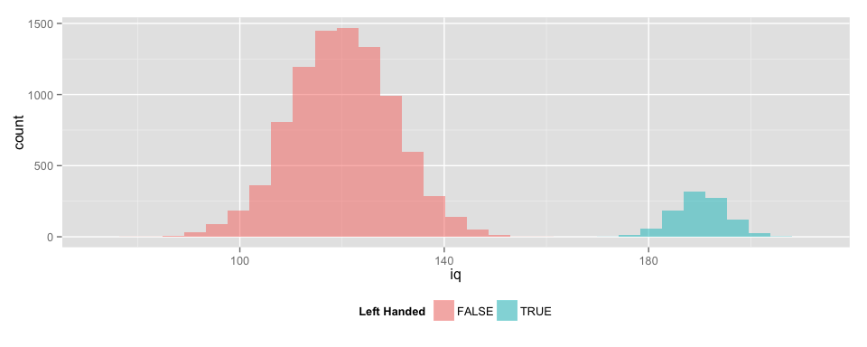
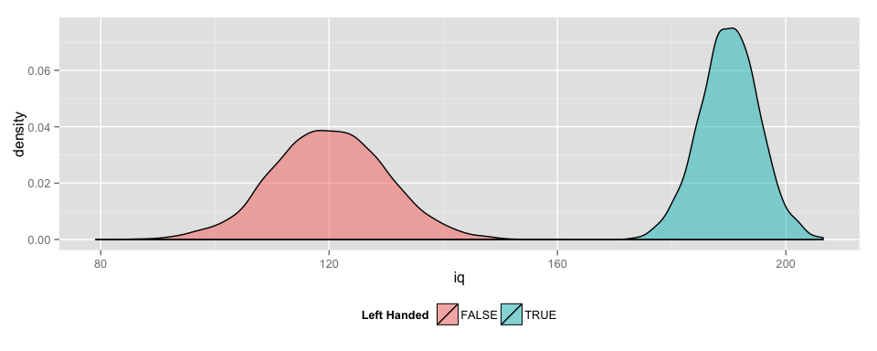

Vignette: ROC Curves
library(knitr)
library(ggplot2)
library(pander)
require(pROC)
require(plyr)
require(data.table)
require(gridExtra)
opts_knit$set(fig.width = 10,
xtable.type = 'html',
warning = FALSE,
cache = TRUE,
dev = 'png',
animation.fun = hook_scianimator_controls)
options(xtable.comment = FALSE)
panderOptions('table.split.table', Inf)
# color blind pallete from http://www.cookbook-r.com/Graphs/Colors_(ggplot2)/`
cbPalette <-
c("#E69F00", "#56B4E9", "#009E73", "#F0E442", "#0072B2", "#D55E00", "#CC79A7")Overview
The purpose of this short note is to explore the effects of the classification threshold on true positive and false positive rates when working with Receiver Operating Characteristic (ROC) Curves. ROC Curves are used in classification problems to show the tradeoff between the True Positive Rate and the False Positive Rate.
In the Laboratory
In this vignette we will work with randomly generated data. In this ficticious example, we will denote two populations: right-handed and left-handed people, with normally distributed IQ scores with differing population means and standard deviations.
Example - Ideal Classification
To demonstrate classification under an ideal scenario, we will set up our two populations so that there is only a very small chance of an incorrect classification.
\(IQ_{Right-Handed} \sim N(120, 10)\)
set.seed(100)
# Number | Mean | Standard Deviation
lN = 1000; lM = 190; lS = 5 # Left-Handed
rN = 9000; rM = 120; rS = 10 # Right-Handed
data <- data.frame(
left.handed = c(rep(TRUE, lN),
rep(FALSE, rN)),
iq = c(rnorm(lN, lM, lS),
rnorm(rN, rM, rS))
)
head(data); tail(data);## left.handed iq
## 1 TRUE 187.4890
## 2 TRUE 190.6577
## 3 TRUE 189.6054
## 4 TRUE 194.4339
## 5 TRUE 190.5849
## 6 TRUE 191.5932## left.handed iq
## 9995 FALSE 120.5281
## 9996 FALSE 108.1157
## 9997 FALSE 123.6964
## 9998 FALSE 113.9186
## 9999 FALSE 132.1074
## 10000 FALSE 138.4564Histograms & Density Plots
The histograms for the populations are shown below. There is a clear line that could be drawn to separate the two populations with little or no judgement required.
g <- ggplot(data = data)
g <- g + geom_histogram(
aes(x = iq, fill = left.handed), alpha = 0.5)
g <- g + scale_fill_discrete(name = "Left Handed")
g <- g + theme(legend.position = "bottom")
#g <- g + scale_fill_manual(values=cbPalette)
g## stat_bin: binwidth defaulted to range/30. Use 'binwidth = x' to adjust this.
By using a kernel density smooth we can eliminate the staggered effect caused by the binning. We will work with kernel density smooths like the one shown below throughout the vignette.
g <- ggplot(data = data)
g <- g + geom_density(
aes(x = iq, fill = left.handed), alpha = 0.5)
g <- g + scale_fill_discrete(name = "Left Handed")
g <- g + theme(legend.position = "bottom")
#g <- g + scale_fill_manual(values=cbPalette)
g
Judgemental Classification
Conditions are rarely so ideal. What happens if our population means for IQ are a bit closer?
\(IQ_{Right-Handed} \sim N(120, 10)\)
set.seed(100)
# Number | Mean | Standard Deviation
lN = 1000; lM = 140; lS = 5 # Left-Handed
rN = 9000; rM = 120; rS = 10 # Right-Handed
data <- data.frame(
left.handed = c(rep(TRUE, lN),
rep(FALSE, rN)),
iq = c(rnorm(lN, lM, lS),
rnorm(rN, rM, rS))
)
head(data); tail(data);## left.handed iq
## 1 TRUE 137.4890
## 2 TRUE 140.6577
## 3 TRUE 139.6054
## 4 TRUE 144.4339
## 5 TRUE 140.5849
## 6 TRUE 141.5932## left.handed iq
## 9995 FALSE 120.5281
## 9996 FALSE 108.1157
## 9997 FALSE 123.6964
## 9998 FALSE 113.9186
## 9999 FALSE 132.1074
## 10000 FALSE 138.4564There is no longer a line that would cleaning separate the two populations. The threshold will now require some judgement, since the placement of the line will determine the True Positive, False Positive, True Negative, and False Negative Rates.
g <- ggplot(data = data)
g <- g + geom_density(
aes(x = iq, y = ..scaled.., color = left.handed), alpha = 0.5)
#g <- g + scale_fill_continuous(name = "Actually Left Handed?")
#g <- g + scale_color_discrete(name = "Classification Result for Left-Handedness")
g <- g + theme(legend.position = "bottom")
#g <- g + scale_color_manual(name = "Actually Left Handed?", values=cbPalette)
g
classify <- function(value, breakpoint){
return(value > breakpoint)
}
score <- function(classification, truth){
type <- as.vector(rep("", length(truth)))
type[classification & truth] <- "True Positive"
type[classification & !truth] <- "False Positive"
type[!classification & !truth] <- "True Negative"
type[!classification & truth] <- "False Negative"
return(type)
}
is.correct <- function(results){
correct <- as.vector(rep(FALSE, length(results)))
correct[grep("True", results)] <- TRUE
return(correct)
}
breakpoint = 131.75The ROC Curve
The ROC curve shows the trade-off frontier for the True Positive and False Positive Rates produced by all possible threshold values. The vertical axis shows the True Positive Rate, which is also known as the Sensitivity. The horizontal axis shows the False Positive Rate, which is related to the Specificity, by \(FPR = 1 - Specificity\).
roc.data <- roc(left.handed ~ iq, data, plot = FALSE)
roc.data <- data.frame(sensitivity = roc.data$sensitivities,
specificity = 1 - roc.data$specificities)
roc.base <- ggplot(roc.data, aes(x = specificity, y = sensitivity)) +
geom_abline(color = "grey", lwd = 1) + geom_line(lwd = 1.5) +
xlab("False Positive Rate") + ylab("True Positive Rate") + ggtitle("ROC Curve")
roc.base2 <- ggplot(roc.data, aes(x = 1 - specificity, y = sensitivity)) +
geom_abline(color = "grey", lwd = 1, intercept = 1) + geom_line(lwd = 1.5) +
xlab("Sensitivity") + ylab("Specificity") + ggtitle("ROC Curve") +
scale_x_reverse()
grid.arrange(roc.base, roc.base2, ncol = 2, main = "Two Common Representations of ROC Curves")
How the ROC Curve is Formed
This animation shows how the ROC curve is formed as the threshold is moved over the range of possible threshold values. Each threshold value corresponds to a different set of classification errors. Use the controls just below the figure to see how the ROC curve is built bit-by-bit.
for(breakpoint in c(seq(130, 145, 0.5),
seq(145, 130, -0.5))){
data.classified <- mutate(data,
prediction = classify(iq, breakpoint),
results = score(prediction, left.handed),
correct = is.correct(results))
plot.info <- ggplot_build(g)$data[[1]]
g1 <- ggplot() + geom_ribbon(data = subset(plot.info, x > breakpoint & group == 2),
aes(x = x, ymin = ymin, ymax = ymax, fill = "True Positive")) +
geom_ribbon(data = subset(plot.info, x < breakpoint & group == 1),
aes(x = x, ymin = ymin, ymax = ymax, fill = "True Negative")) +
geom_ribbon(data = subset(plot.info, x > breakpoint & group == 1),
aes(x = x, ymin = ymin, ymax = ymax, fill = "False Positive")) +
geom_ribbon(data = subset(plot.info, x < breakpoint & group == 2),
aes(x = x, ymin = ymin, ymax = ymax, fill = "False Negative")) +
scale_fill_discrete(name = "Classification Result for Left-Handedness")
g1 <- g1 + geom_vline(x = breakpoint, size = 2, color = "black") +
theme(legend.position = "bottom")
g2 <- ggplot(data.classified, aes(x = left.handed, fill = results)) + geom_bar(position = "fill")
g2 <- g2 + theme(legend.position = "none")
g2 <- g2 + xlab("Left Handed?") + ylab("Classification Success / Error Rates")
contingency <- with(data.classified,
table(prediction, left.handed))
contingency[1,1] <- contingency[1,1] / rN
contingency[1,2] <- contingency[1,2] / lN
contingency[2,1] <- contingency[2,1] / rN
contingency[2,2] <- contingency[2,2] / lN
colnames(contingency) <- c("Right Handed", "Left Handed")
rownames(contingency) <- c("Classified Right", "Classified Left")
g3 <- tableGrob(formatC(contingency, format = "f", digits = 2),
row.just = "right",
gpar.rowtext = gpar(col = "black", cex = 1, fontface = "bold"))
g4 <- roc.base + annotate("point", x = contingency[2,1], y = contingency[2,2], color = "red", size = 8)
#grid.arrange(g1, g2, g3, roc.base, nrow = 2, widths = c(3.5, 1, 2, 2.5),
grid.arrange(arrangeGrob(g1, g2, ncol = 2, widths = c(3.5, 1)),
arrangeGrob(g3, g4, ncol = 2, widths = c(2, 2.5)),
nrow = 2, main = paste("Classification, Threshold =", formatC(breakpoint, format = "f", digits = 1)))
}Appendix
Reproducibility Information
sessionInfo()R version 3.1.2 (2014-10-31) Platform: x86_64-apple-darwin13.4.0 (64-bit)
locale: [1] en_US.UTF-8/en_US.UTF-8/en_US.UTF-8/C/en_US.UTF-8/en_US.UTF-8
attached base packages: [1] grid stats graphics grDevices utils datasets methods
[8] base
other attached packages: [1] gridExtra_0.9.1 data.table_1.9.4 plyr_1.8.1 pROC_1.7.3
[5] pander_0.5.1 ggplot2_1.0.0 knitr_1.7.10
loaded via a namespace (and not attached): [1] chron_2.3-45 codetools_0.2-9 colorspace_1.2-4 digest_0.6.4
[5] evaluate_0.5.5 formatR_1.0 gtable_0.1.2 htmltools_0.2.6 [9] labeling_0.3 MASS_7.3-35 munsell_0.4.2 proto_0.3-10
[13] Rcpp_0.11.3 reshape2_1.4.1 rmarkdown_0.3.10 scales_0.2.4
[17] stringr_0.6.2 tools_3.1.2 yaml_2.1.13